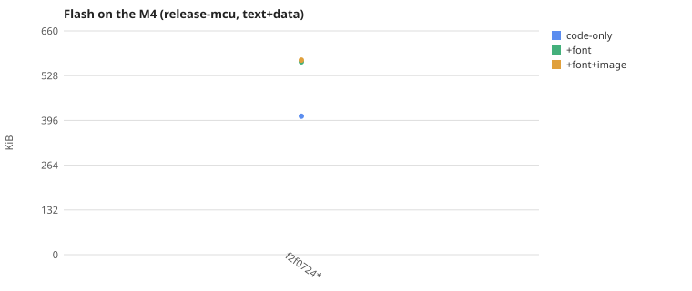
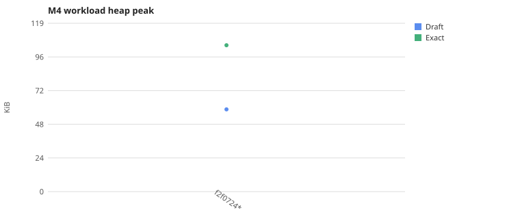
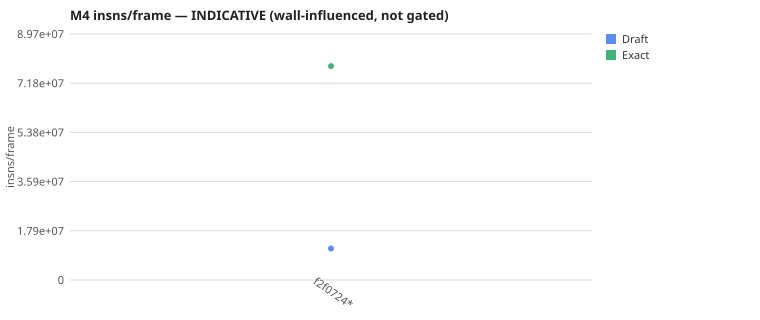
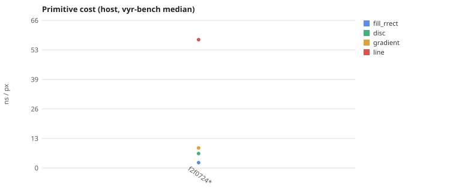
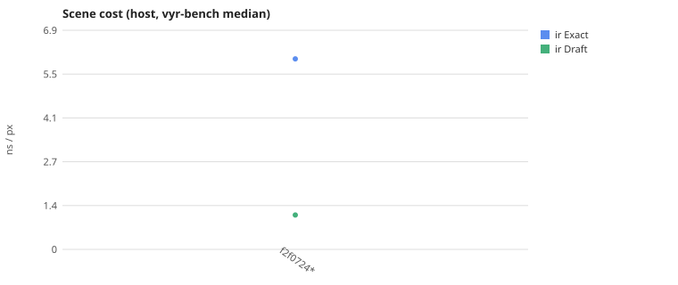
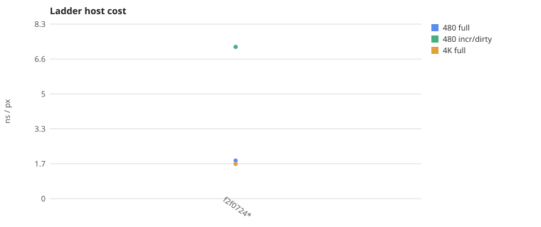
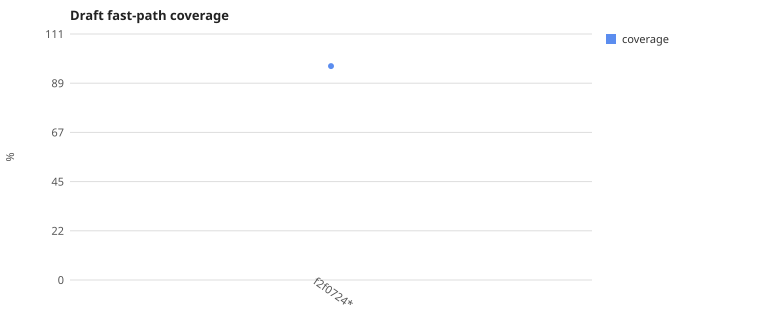

Every ./dev.py track snapshots the valuable numbers
against the current git commit (a * = a dirty tree) and appends to
the append-only history.jsonl, then
regenerates this page. The point: the numbers we throw around get a tracked,
graphed home. The M4 insns/frame is INDICATIVE — SYS_CLOCK is
wall-influenced on a plugin-less qemu; the deterministic signals are the host
ns/px (vyr-bench/ladder) + the M4 heap peak. Companion to the
F18 rig perf ledger.
f2f0724* · 2026-06-12T09:55:49Z






| metric | value |
|---|---|
| draft_coverage_pct | 96.8 |
| flash_code_kib | 408.0 |
| flash_font_kib | 568.6 |
| flash_fontimg_kib | 573.6 |
| ladder480_full_ns_px | 1.8055 |
| ladder480_incr_ns_px | 7.2003 |
| ladder4k_full_ns_px | 1.6447 |
| m4_draft_heap_kib | 58.4 |
| m4_draft_insns | 11500000 |
| m4_exact_heap_kib | 103.9 |
| m4_exact_insns | 78000000 |
| ns_disc | 6.4482 |
| ns_fill_rrect | 2.3915 |
| ns_gradient | 8.9281 |
| ns_line | 57.1732 |
| ns_scene_draft | 1.0764 |
| ns_scene_exact | 5.9704 |
2026-06-12T09:55:49Z · f2f0724+dirty · selwyn (x86_64) · 17 metrics